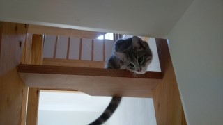

Eine Katze auf einer Treppe ist besser als ein Spatz auf dem Dach. Die frühe Katze fängt den Wurm. Katzen, die bellen, beißen nicht. Aus einer Mücke eine Katze machen (empfehlenswert?). Aus einer Katze einen Elefanten machen (empfehlenswert?). Die Katze im Porzellanladen. Katze und Maus spielen